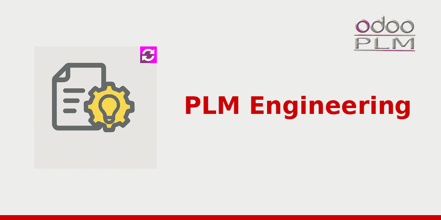

<!-- The Apps store rewrites every <a> of a module description into a <span>, so a
     link here looks clickable and does nothing: addresses are printed as text.
     Inline styles, the bootstrap grid and the oe_ classes survive. The palette is
     the company one: #CC0000 for the accents, #000000 for the outlines. -->
<div class="container">
    <div class="oe_styling_v8">
        <div class="container p-3 mb-3">
            <div class="container pt-0 px-4 pb-5">
                <div class="row">
                    <div class="col-12">
                        
                    </div>
                </div>

<div class="row">
                    <div class="col-12 px-4">
                        <h2 class="font-weight-bold"
                            style="font-family:'Montserrat', sans-serif !important; font-size:2rem; color:#CC0000">
                            Overview
                        </h2>
                        <hr style="border: 2px solid #000000 !important; background-color: #000000 !important; width: 50px !important; margin-left: 0 !important; margin-top: 8px;">
                        <h3 class="oe_slogan" style="text-align:left; color:#000000">
                            The structure as designed, and the structure as built, without choosing one.
                        </h3>
                    </div>
                </div>

                <div class="row">
                    <div class="col-12 px-4">
                        <p style="font-size:18px; text-align:justify">
                            A bill of material means two different things to two departments. The
                            technical office describes the product as it was designed: the assembly
                            tree that comes out of the CAD, every part in its place. Manufacturing
                            needs the structure it can actually build and buy: purchased sub
                            assemblies bought complete, quantities grouped, items that exist on the
                            drawing but never on an order.
                        </p>
                        <p style="font-size:18px; text-align:justify">
                            Companies usually resolve this by giving up one of the two. Either the
                            engineering structure is bent until production can use it, and the link
                            with the design is lost, or somebody retypes the whole thing and keeps
                            two lists aligned by hand. This module keeps both, and derives the
                            second from the first.
                        </p>
                    </div>
                </div>

                <div class="row" style="margin-top:2rem">
                    <div class="col-12 px-4">
                        <h2 class="font-weight-bold"
                            style="font-family:'Montserrat', sans-serif !important; font-size:2rem; color:#CC0000">
                            What it does
                        </h2>
                        <hr style="border: 2px solid #000000 !important; background-color: #000000 !important; width: 50px !important; margin-left: 0 !important; margin-top: 8px;">
                    </div>
                </div>
                <div class="row">
                    <div class="col-6 px-4">
                        <h3 class="oe_slogan" style="color:#000000; text-align:left; font-size:1.3rem">A BOM type of its own</h3>
                        <p style="font-size:18px; text-align:justify">
                            The engineering bill of material sits next to the manufacturing one and
                            the spare one, on the same product, as its own type. What the CAD
                            uploads lands there, and nobody has to edit it to make production work.
                        </p>
                        <h3 class="oe_slogan" style="color:#000000; text-align:left; font-size:1.3rem">Production BOM generated</h3>
                        <p style="font-size:18px; text-align:justify">
                            From the engineering structure the manufacturing one is created in a
                            single action, at the level you ask for. What production had already
                            adjusted on the previous version is carried over instead of being
                            overwritten, and repeated components are grouped into one line with the
                            summed quantity.
                        </p>
                    </div>
                    <div class="col-6 px-4">
                        <h3 class="oe_slogan" style="color:#000000; text-align:left; font-size:1.3rem">The link back is kept</h3>
                        <p style="font-size:18px; text-align:justify">
                            Every generated bill of material, and every one of its lines, remembers
                            the engineering line it came from. When a revision changes the design,
                            you can see what it touches downstream rather than guessing.
                        </p>
                        <h3 class="oe_slogan" style="color:#000000; text-align:left; font-size:1.3rem">Searchable as engineering</h3>
                        <p style="font-size:18px; text-align:justify">
                            Engineering structures have their own entry point and their own views,
                            so looking for where a part is used as designed is a search, not an
                            archaeological exercise across manufacturing orders.
                        </p>
                    </div>
                </div>

                <div class="row" style="margin-top:2rem">
                    <div class="col-12 px-4">
                        <ul style="padding-left:0; list-style-type:none; margin:0">
                            <li style="font-size:18px; color:#000000; margin:12px 0">
                                <span style="color:#CC0000; font-weight:700">&#9642;</span>&nbsp;&nbsp;The design structure stays as it was designed
                            </li>
                            <li style="font-size:18px; color:#000000; margin:12px 0">
                                <span style="color:#CC0000; font-weight:700">&#9642;</span>&nbsp;&nbsp;The manufacturing structure is derived, not retyped
                            </li>
                            <li style="font-size:18px; color:#000000; margin:12px 0">
                                <span style="color:#CC0000; font-weight:700">&#9642;</span>&nbsp;&nbsp;What production adjusted is not lost at the next revision
                            </li>
                            <li style="font-size:18px; color:#000000; margin:12px 0">
                                <span style="color:#CC0000; font-weight:700">&#9642;</span>&nbsp;&nbsp;Every line remembers where it came from
                            </li>
                        </ul>
                    </div>
                </div>

                <div class="row" style="margin-top:2rem">
                    <div class="col-12 px-4">
                        <p style="font-size:18px; text-align:justify">
                            Part of <b>OdooPLM</b>, the Product Lifecycle Management suite by
                            OmniaSolutions. It requires the <b>plm</b> module, and it is released
                            under AGPL-3.
                        </p>
                    </div>
                </div>

                <div class="oe_centeralign" style="margin-top:24px">
                    <div class="oe_spaced" style="display:inline-block; min-width:300px; margin:10px 12px; padding:14px 22px; border:2px solid #000000; border-radius:10px; text-align:center; vertical-align:top">
                        <span style="font-size:15px; color:#000000">Try the whole suite with Docker</span><br/>
                        <b style="font-size:17px; color:#CC0000">github.com/OmniaGit/DockerOdooPLM</b>
                    </div>
                    <div class="oe_spaced" style="display:inline-block; min-width:300px; margin:10px 12px; padding:14px 22px; border:2px solid #000000; border-radius:10px; text-align:center; vertical-align:top">
                        <span style="font-size:15px; color:#000000">Website</span><br/>
                        <b style="font-size:17px; color:#CC0000">odooplm.omniasolutions.website</b>
                    </div>
                    <div class="oe_spaced" style="display:inline-block; min-width:300px; margin:10px 12px; padding:14px 22px; border:2px solid #000000; border-radius:10px; text-align:center; vertical-align:top">
                        <span style="font-size:15px; color:#000000">Contact us</span><br/>
                        <b style="font-size:17px; color:#CC0000">www.omniasolutions.website/#contact</b>
                    </div>
                </div>

            </div>
        </div>
    </div>
</div>
